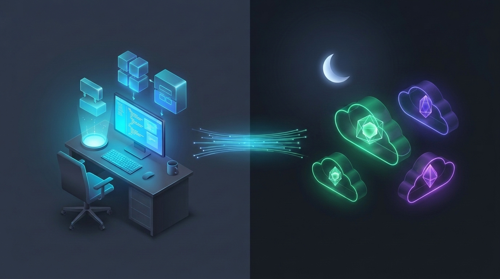
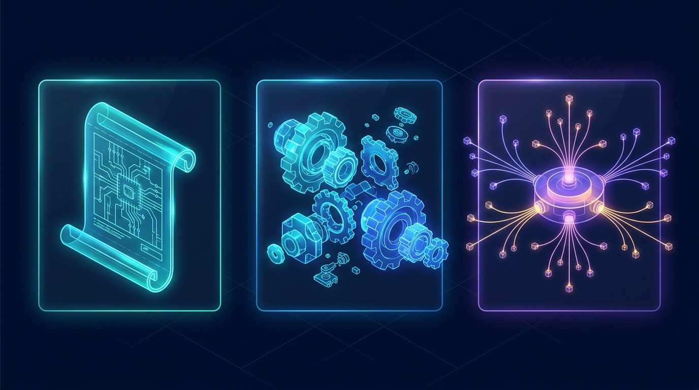

The complete visual handbook to Google's agent-first software studio—covering Antigravity 2.0, the IDE, CLI, Subagent Swarms, Customizations, and the Jules Async Workflow.
agy) & Python SDK
agy), and Python SDK./goal runs never stall.
Google Antigravity (antigravity.google) is Google's flagship agent-first software creation platform—designed not just to autocomplete lines of code, but to plan, build, test, browse, and ship entire projects alongside you.
agy), Python SDK & Browserp. 11@ Contextp. 6jules.google), pioneered background cloud-VM bug fixing and automated Pull Requests. In late 2026 (read-only Nov 11, 2026; full sunset Dec 31, 2026), Google consolidated Jules's best async capabilities—branched background subagents, scheduled cron tasks, AGENTS.md memory, and GitHub PR automation—directly into Google Antigravity. Page 8 covers both Jules's workflow and your exact migration map!
You don't need to be a senior software engineer to use Antigravity. Non-coders use Antigravity 2.0 to generate guides, websites, and automations, while engineers pair it with the IDE and CLI.
Download Antigravity 2.0 or Antigravity IDE from antigravity.google, or install the terminal CLI (agy) and Python SDK.
Authenticate with the Google account tied to your Google AI Ultra plan to unlock frontier models and 5x–20x rate limits automatically.
Select a workspace folder. Coming from Cursor, Claude Code, or Codex? Ask the agent: "Migrate my agent settings into a plugin."
| Surface | Best For | Everyday Superpower |
|---|---|---|
| Antigravity 2.0 Desktop App |
Creators, PMs, researchers & multi-agent orchestrators | Clean workspace without code clutter. Delegate research, build apps from scratch, inspect rich Markdown/HTML Artifacts, and schedule daily cron jobs. |
| Antigravity IDE Standalone Editor |
Hands-on coding, refactoring & debugging | Full VS Code compatibility plus single-keystroke Tab Supercomplete, Cmd+I inline edits, inline Code Lenses, and red/green visual diff review. |
Antigravity CLIagy in Terminal |
Terminal lovers, SSH servers & quick repo tasks | Type agy inside any folder to launch an interactive terminal agent with full slash commands and subagent support (~/.gemini/antigravity-cli/settings.json). |
Python SDKgoogle-antigravity |
Custom automation pipelines & CI test suites | Spawn programmable Agent() instances inside Python scripts, stream live thought/tool events, and wire custom local tools. |
/teamwork (parallel agent swarms), /boost (multi-perspective deep verification), and /goal (long overnight runs) consume heavy tokens. AI Ultra's 5x–20x quota multiplier keeps them humming without hitting mid-task caps.
Antigravity 2.0 separates high-level thinking from raw code files. You converse in the center Chat Canvas while live subagents, terminals, artifacts, and file diffs update in the right-hand Auxiliary Pane.
api/stripe/route.ts/ for commands, @ to attach files/MCP, or drop screenshots...
4
npm test6
+84 -12 across 3 TypeScript files/, pull exact context with @, or drag UI mockups and PDFs straight into chat.Built on VS Code so all your favorite extensions and themes carry over, Antigravity IDE gives you three distinct gears depending on whether you are editing one line, one function, or twenty files.
Tab)Millisecond Flow State. Predicts your next edit, multi-line diff (Supercomplete), missing import, or next cursor jump.
Cmd+I)Surgical Single-Block Edit. Highlight a function, press Cmd+I (Ctrl+I), and ask for a refactor, docstring, or type fix.
Multi-File Autonomous Builder. Reads codebase, edits across folders, runs tests, checks browser, and fixes errors.
| Feature / Action | Shortcut (macOS / Win) | How to Use It Effectively |
|---|---|---|
| Supercomplete & Tab-to-Jump | Tab / Esc |
After renaming a prop or parameter, wait 0.2s—Antigravity highlights the next callsite and lets you teleport there with Tab. |
| Tab-to-Import | Tab |
Type a component or utility name from another file; pressing Tab automatically inserts the clean top-of-file import statement. |
| Inline Command | Cmd+I / Ctrl+I |
Place cursor on an empty line to generate a new helper from scratch, or select messy code and type "Extract into pure async helper." |
| Inline Code Lenses | Click lens above symbol | One-click buttons floating above classes and functions: Explain, Refactor, or Write Unit Tests scoped to that exact symbol. |
| Diagnostic Auto-Fix | Hover red squiggle / Problems | Click Fix with Antigravity on any TypeScript, Python, Rust, or linter error to patch root causes using surrounding context. |
.agents/ rules! Many Ultra users keep Antigravity 2.0 running long research or multi-agent swarms on a second monitor while making fast Tab and Cmd+I tweaks inside Antigravity IDE.
/), @ Mentions & Artifacts
/ Slash Commands & @ MentionsTyping a single slash command at the start of your prompt shifts Antigravity into specialized operating modes—from interactive design interviews to unstoppable overnight execution.
| Command | What Mode It Activates | When to Reach for It |
|---|---|---|
/plan |
Step-by-Step Blueprint Mode | Before any multi-file feature or refactor. Writes a reviewable plan artifact before editing code. |
/grill-me |
Interactive Design Interview | When your idea is still fuzzy—the agent interviews you on edge cases and trade-offs until aligned. |
/goal |
Relentless Autonomous Mode | Long or overnight tasks (e.g., "Get test coverage to 90% and fix all build errors")—won't stop early. |
/boost |
Deep Multi-Perspective Mode | Hard architecture bugs or research requiring deep reasoning, competing hypotheses, and strict proof. |
/teamwork |
Multi-Agent Swarm Mode | Large projects where independent slices (frontend, API, tests, review) can be built in parallel. |
/browser |
Live Webview Browser Agent | Testing localhost web apps, clicking through UI flows, or interacting with live JS-rendered sites. |
/schedule |
Recurring Cron Automation | Setting up daily/weekly background runs (also accessible via /automation), like morning PR digests. |
/learn |
Persistent Memory Capture | Right after you correct a mistake or solve a tricky setup—saves the lesson as a reusable rule/skill! |
/compact |
Context Window Optimizer | Summarizes a very long chat history so your session stays sharp, fast, and uncluttered. |
@ MentionsAttach @package.json or @src/auth/ so the agent reads exact targets immediately without guessing.
Reference a failing build with @terminal or carry decisions forward from @previous-conversation.
Explicitly invoke a style guide via @rule or query connected databases/GitHub via @mcp.
Whether you are building a personal dashboard from scratch or adding a feature to an existing repo, this 6-step loop keeps you in full control while the agent handles the heavy lifting.
| Turn | Exact Prompt You Type | What Antigravity Does Behind the Scenes |
|---|---|---|
| Turn 1: Plan | /plan Build a clean Next.js + SQLite expense tracker with CSV import and monthly charts. |
Creates a task checklist & architecture plan artifact with tech choices and schema; pauses for feedback. |
| Turn 2: Build | Click Proceed on the plan artifact (or reply: "Add dark mode toggle too, then proceed.") | Scaffolds project, writes database & chart components, runs npm run build and unit tests until green. |
| Turn 3: Verify UI | Start the dev server and open localhost:3000 in the browser to test uploading a sample CSV. |
Starts background server, delegates to the Browser Subagent, uploads a test CSV, and verifies charts render. |
| Turn 4: Ship | Initialize git, write a clean commit, and push to a new private GitHub repo via GitHub MCP. |
Commits tested code and creates your remote repository + clean README automatically. |
Google Jules (jules.google) introduced "fire-and-forget" asynchronous engineering—cloning GitHub repos into cloud Linux VMs, proposing a plan, running tests, and opening Pull Requests while you worked elsewhere.

Rather than splitting your quota between two separate coding products, Google folded Jules's async architecture into Antigravity (Jules entered read-only mode on Nov 11, 2026 ahead of full sunset on Dec 31, 2026). Every beloved Jules workflow now has a direct—and more powerful—home inside Antigravity:
Classic Jules Feature (jules.google) |
How You Do It Better in Google Antigravity Today |
|---|---|
| "Give Me a Plan" Approval Gate | Use /plan (or IDE Planning Mode). Antigravity writes a structured Markdown plan Artifact with an interactive Proceed button. |
60 Parallel Cloud Tasks (AI Ultra)jules remote new --parallel 3 |
Use /teamwork (Swarm) or spawn subagents with workspace: "share" / "branch" so each agent edits its own isolated git copy in parallel. |
Repo AGENTS.md Memory File |
100% Native! Antigravity automatically discovers and obeys your existing root and subdirectory AGENTS.md (and GEMINI.md) files with zero changes. |
| GitHub Issue / PR Automation | Connect the built-in GitHub MCP Server (or gh CLI skill) + /goal to pull an issue, fix it on a branch, run tests, and open a ready-to-merge PR. |
| Scheduled Scans & Audio Recaps | Use /schedule (or /automation) to run nightly dependency/security audits or morning changelog digests automatically. |
npx @google/jules in your terminal and authenticate via jules login to export past session patches, setup scripts, and repository memories straight into your local Antigravity .agents/ folder before standalone jules.google retires.
With a Google AI Ultra plan, you aren't limited to a single single-threaded assistant. Antigravity can dispatch specialized specialist agents—or an entire collaborative team—that work simultaneously.
Antigravity automatically delegates focused jobs—like surveying a huge repo (research), clicking around a web app (browser), or generating assets (image-generator)—and receives a concise summary back.
/teamwork)For ambitious builds or cross-checking critical code, type /teamwork. Multiple named agents (author-1, author-2, verifier) collaborate on a shared public message board!
| Workspace Mode | How It Works & Why It Prevents File Conflicts |
|---|---|
inherit (Default) |
Works directly inside your active folder. Ideal for read-only researchers, code reviewers, or single-author tasks. |
share (Worktree) |
Creates an instant lightweight working copy sharing .git storage—letting 3+ authors edit and build simultaneously without overwriting each other! |
branch (Clone) |
Creates a completely isolated clone for risky refactors or competing architectural experiments (just like Jules's parallel --parallel 3 runs). |
Out of the box, Antigravity is a brilliant generalist. With five modular customization building blocks, you turn it into a specialist tailored to your exact voice, codebase, and third-party apps.

GEMINI.md / AGENTS.md): Always-on guardrails, tone & repo conventions.SKILL.md): On-demand playbooks & 1-click Marketplace bundles.| Type | Where It Lives | What It Does |
|---|---|---|
| Rules | AGENTS.md, GEMINI.md, or .agents/rules/*.md |
Enforces coding standards, tech stack choices, or response style. Loaded hierarchically from edited subfolder up to repo root. |
| Skills | .agents/skills/<name>/SKILL.md (or ~/.gemini/config/skills/) |
Step-by-step SOPs (like PDF creation, security audits, or TDD). Uses progressive disclosure: full text loads only when relevant! |
| Plugins | Marketplace or ~/.gemini/config/plugins/<name>/ |
Packages skills, rules, subagents, and MCP servers into one toggleable unit (e.g., Google Docs/Drive/Sheets, Vercel, Figma, Android). |
| MCP Servers | mcp_config.json (or inside a Plugin) |
Model Context Protocol bridges giving the agent live tools for GitHub PRs, SQLite/Postgres, Chrome DevTools, Linear, or Canva. |
| Hooks | hooks.json |
Shell scripts triggered automatically at lifecycle events (e.g., auto-formatting or secret scanning before/after tool calls). |
.agents/ folder and commit them to Git—Workspace configs always take top priority! Put personal preferences (like your preferred writing voice or global plugins) in ~/.gemini/config/ so they follow you across every project on your Mac.
agy), Python SDK & Automations
agy CLI, Python SDK & Cron JobsWhen you want agentic power directly inside your macOS terminal, automated Python scripts, or recurring morning briefings, reach for these three headless workflows.
agy)Open Terminal in any project folder and run agy:
Settings live in ~/.gemini/antigravity-cli/settings.json.
/automation)Run standing jobs on a cron schedule—even while away from your desk:
/automation (or /schedule) in Antigravity 2.0.
Install via pip install google-antigravity (includes the compiled local runtime binary) to embed full Antigravity agents inside your own Python pipelines, CI checks, or data workflows:
Autonomous agents are only fun when you trust their boundaries. Antigravity gives you granular global and per-project guardrails under Settings → Permissions & Sandbox.
Choose proceed-in-sandbox (recommended sweet spot: fast autonomy inside an OS sandbox), request-review (ask before shell commands), or strict.
Set Non-Workspace File Access to ask or deny so an agent working on one project never touches unrelated folders without permission.
Pre-approve safe daily commands (npm test, git status) while hard-blocking destructive ones (rm -rf, production deploy scripts).
Restrict which external domains the Browser Subagent can visit; sensitive login and payment pages always pause and hand control back to you.
| Common Situation | Fastest Fix |
|---|---|
| Agent repeats a mistake you already fixed | Type /learn or add a 1-line rule to your project's AGENTS.md so it sticks forever. |
| Long conversation starts feeling slow or fuzzy | Run /compact to distill context, or start a fresh chat referencing @previous-conversation. |
| Need Google Docs, Figma, or Linear integration | Ask: "Search the Marketplace for Figma / Google Docs" and click Add on the plugin card. |
| Want Jules-style isolated parallel attempts | Ask Antigravity to "spawn 2 branched subagents comparing Approach A vs. Approach B." |
AGENTS.md in repo root with build/test commands.proceed-in-sandbox for safe, interruption-free speed./plan or /grill-me./browser agent.@file or @folder./goal or /teamwork on AI Ultra for big builds!